워드프로세서-2급(폐지) (2002-09-01 기출문제)
1과목: 워드프로세서 용어 및 기능
1. 다음 중 입력장치로 짝지어진 것은?
- OCR, MICR, 마우스
- 트랙볼, 터치스크린, PDP
- 키보드, 스캐너, LCD
- 태블릿, 키보드, 플로터
(정답률: 68%)

2. 다음 중 표시장치에 대한 설명으로 옳지 않은 것은?
- 표시장치의 화면 크기는 대각선의 길이로 나타낸다.
- 표시장치의 해상도는 화면에 표시되는 선명도, 정밀도를 나타낸다.
- 표시장치의 종류에는 음극선관, 액정 디스플레이, 플라즈마 디스플레이 등이 있다.
- 표시장치 해상도의 단위는 CPI(Character Per Inch)이다.
(정답률: 68%)
3. 다음 중 메일 머지(Mail Merge) 기능을 적용하기에 가장 적합한 것은?
- 편집 중인 문서에서 여러 부분의 특정 영역을 굴림체로 변경한다.
- 교육이수증에 별도의 데이터로 작성된 성명과 주민등록번호를 조합하여 인쇄한다.
- 편집 중인 문서에서 같은 내용을 여러 곳에 복사한다.
- 여러 개의 특정 문단에 대해 가운데 정렬한다.
(정답률: 51%)
4. 다음 중 워드프로세서의 입력 및 편집 기능에 대한 설명으로 옳지 않은 것은?
- 한자 입력은 음절 단위 변환, 단어 단위 변환, 문장 자동 변환, 부수 입력 등으로 입력할 수 있다.
- 영문 입력시 소문자 입력 상태에서 [Shift] 키를 사용하여 대문자를 입력할 수 있다.
- 한글을 한자로 치환할 수 없다.
- 특수문자는 한글 자음을 입력한 후 [한자] 키를 사용하여 입력할 수도 있다.
(정답률: 61%)
5. 다음 중 작성된 문서의 내용을 요약하여 효율적으로 관리하고, 암호를 지정하여 보안을 유지할 수 있도록 하는 워드프로세서의 주된 기능은 어느 것인가?
- 입력 기능
- 편집 기능
- 저장 기능
- 표시 기능
(정답률: 81%)
6. 다음 중 워드프로세서 저장 기능의 특징으로 옳지 않은 것은?
- 저장시 암호를 지정하여 문서의 보안을 유지할 수 있다.
- 원본 파일이 삭제되거나 파괴되었을 경우를 대비하여 저장시 백업 파일이 만들어지도록 설정할 수 있다.
- 예기치 않은 사고에 대비하여 일정한 시간 간격으로 저장해 주는 자동 저장기능을 제공한다.
- 워드프로세서 프로그램의 종류는 달라도 저장되는 파일 형식은 같다.
(정답률: 63%)
7. 다음 확장자 중에서 그래픽 파일이 아닌 것은?
- EXE
- WMF
- JPG
- GIF
(정답률: 68%)
8. 다음은 워드프로세서의 어떤 기능에 대한 설명인가?
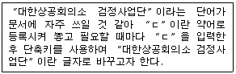
- 문단모양
- 상용구(Glossary)
- 스타일(Style)
- 매크로(Macro)
(정답률: 78%)
9. 다음 중 탭(Tab) 기능에 대한 설명으로 옳지 않은 것은?
- 탭은 사용자가 추가하거나 삭제할 수 있다.
- 탭에는 왼쪽 탭, 가운데 탭, 소숫점 탭 등이 있다.
- 점끌기 탭을 추가할 수도 있다.
- 탭은 동일한 간격으로만 지정할 수 있다.
(정답률: 58%)
10. 다음 중 각 단위에 대한 설명으로 옳지 않은 것은?
- DPI : 인쇄 속도 단위로 인치 당 인쇄되는 점의 크기를 의미한다.
- LPM : 라인 프린터의 인쇄 속도 단위로 분 당 인쇄할 수 있는 줄 수를 의미한다.
- PPM : 페이지 프린터의 인쇄 속도 단위로 분당 인쇄되는 페이지 수를 의미한다.
- 피치(Pitch) : 인쇄할 문자와 문자 사이의 간격을 나타내는 단위로 1인치에 인쇄되는 문자수를 의미한다.
(정답률: 59%)
11. 다음 중 위지윅(WYSIWYG)에 대한 설명으로 가장 거리가 먼 것은?
- CUI(Character User Interface) 환경이 실현되면서 가능해진 개념이다.
- ‘What You See Is What You Get’의 약어이다.
- 화면 그대로 프린터에 출력을 얻을 수 있는 기능이다.
- 그래픽 표시방식의 대표적 기능이다.
(정답률: 51%)
12. 일반적으로 편집화면에는 나타나지 않는 숨은 문자로, 편집과정에서 생긴 표나 글상자, 머리말, 꼬리말 등을 표시하기 위하여 사용되는 것으로 인쇄시에는 나타나지 않는 것을 무엇이라고 하는가?
- 수식편집기
- 위지웍(WYSIWYG)
- 조판부호(Control Code)
- 피치(Pitch)
(정답률: 62%)
13. 다음 중 Cut(오려두기) & Paste(붙이기) 기능과 가장 관련이 있는 기억장치는?
- CD-ROM
- 하드디스크(Hard Disk)
- 버퍼(Buffer)
- 플로피디스크(Floppy Disk)
(정답률: 87%)
14. 다음 중 워드프로세서의 화면 구성에 대한 설명으로 옳지 않은 것은?
- 상태표시줄(Status Line) : 현재 쪽 정보, 커서의 위치, 입력 상태를 표시하는 화면 하단의 영역
- 도구모음 : 자주 사용하는 메뉴 명령을 작은 아이콘으로 만들어 표시한 도구
- 눈금자(Ruler) : 보이지 않는 화면을 보기 위한 화면 오른쪽과 하단의 막대
- 커서 : 화면상에서 현재의 작업 위치를 알려주는 표시
(정답률: 67%)
15. 다음 중 치환(Replace)에 대한 설명으로 옳지 않은 것은?
- 특정 부분의 문자열을 다른 문자열로 빠르게 바꾸어주는 기능이다.
- 작업 후 문서 전체 분량에 대해서 변화가 있을 수 있다.
- 반드시 문서 내에서 영역 설정을 먼저 한 후에야 작업이 가능하다.
- 특정 속성이 지정된 문자열은 물론 외국어, 한자, 특수문자 등도 바꿀 수 있다.
(정답률: 58%)
16. 공문서의 구성에서 수신란과 수신처의 위치를 올바르게 설명한 것은?
- 수신란은 두문에, 수신처는 결문에 위치한다.
- 수신처는 두문에, 수신란은 결문에 위치한다.
- 수신란, 수신처 둘 다 두문에 위치한다.
- 수신란, 수신처 둘 다 결문에 위치한다.
(정답률: 53%)
17. 다음 중 문서작성의 일반원칙이 아닌 것은?
- 정확성
- 신속성
- 경제성
- 편의성
(정답률: 82%)
18. 다음 중 지시문서가 아닌 것은?
- 훈령
- 예규
- 일일명령
- 고시
(정답률: 79%)
19. 다음 중 서로 반대되는 의미를 갖는 교정부호가 아닌 것은?
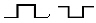
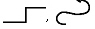
(정답률: 84%)
20. 다음 교정부호 중에서 원래 문장의 글자 수에 변동을 주지 않는 것은?
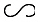
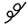
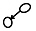
(정답률: 85%)
2과목: PC 운영 체제
21. 다음 중 한글 Windows 98에서 작업표시줄의 [시작] 메뉴를 나타내기 위한 바로가기 키로 가장 적절한 것은?
- [Alt] ＋ [Esc]
- [Ctrl] ＋ [Esc]
- [Alt] ＋ [Tab]
- [Ctrl] ＋ [Tab]
(정답률: 69%)
22. 한글 Windows 98을 새로이 설치한 초기 상태에서 바탕화면에 표시되는 기본적인 아이콘이 아닌 것은?
- 내 문서
- 제어판
- 휴지통
- 내 컴퓨터
(정답률: 70%)
23. 한글 Windows 98에서 활성화된 창을 닫거나 프로그램을 종료시키기 위해 사용되는 바로가기 키는?
- [윈도우 로고키] ＋ [D]
- [Alt] ＋ [F4]
- [윈도우 로고키] ＋ [M]
- 작업 표시줄의 ‘바탕화면보기' 아이콘 클릭
(정답률: 80%)
24. 한글 Windows 98의 [시작] 메뉴에서 [설정]-[작업 표시줄 및 시작 메뉴]를 선택하여 [작업표시줄 등록정보] 창을 표시하였다. [작업표시줄 등록정보] 창의 [작업표시줄 옵션] 탭에서 설정 가능한 항목이 아닌 것은?
- 상태 표시줄 표시
- 자동 숨김
- 시작 메뉴에서 작은 아이콘 표시
- 항상 위
(정답률: 54%)
25. 한글 Windows 98에서 [제어판]-[키보드] 도구를 이용하여 설정할 수 있는 기능이 아닌 것은?
- 키 재입력 시간을 조절할 수 있다.
- 키 반복속도를 조절할 수 있다.
- 키보드의 드라이버 소프트웨어를 업데이트할 수 있다.
- 커서 깜박임 속도를 조절할 수 있다.
(정답률: 56%)
26. 한글 Windows 98을 부팅할 때 발생되는 문제를 해결하기 위해 시동 디스크를 작성하려면 [제어판]에서 다음 중 어느 아이콘을 선택해야 하는가?
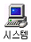
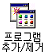
(정답률: 52%)
27. 한글 Windows 98의 [디스플레이 등록정보] 창에서 수행할 수 있는 작업이 아닌 것은?
- 배경 화면의 설정
- 화면 보호기의 설정
- 해상도의 설정
- 작업 표시줄에 볼륨 조절 표시 설정
(정답률: 71%)
28. 한글 Windows 98의 [휴지통]에 대한 설명으로 옳지 않은 것은?
- DOS 모드에서 삭제한 파일은 휴지통에서 복원 메뉴로 복원할 수 없다.
- 각각의 드라이브마다 휴지통의 크기를 다르게 지정할 수 있다.
- 플로피 드라이브에서 삭제한 파일은 휴지통에서 복원 메뉴로 복원할 수 있다.
- 휴지통의 등록정보에서 휴지통의 크기를 지정할 수 있다.
(정답률: 60%)
29. 한글 Windows 98의 [내 컴퓨터] 창에서 [보기] 메뉴의 [자세히]를 선택하였을 때 표시되는 정보가 아닌 것은?
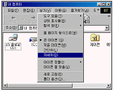
- 이름
- 종류
- 읽기 전용
- 디스크인 경우 전체크기
(정답률: 62%)
30. 한글 Windows 98에서 폴더나 파일의 이름을 변경하기 위해서는 해당 폴더나 파일을 선택한 후에 마우스 오른쪽 버튼을 누른 후 나타나는 팝업 메뉴에서 '이름 바꾸기'를 선택하면 된다. 이 때 이와 동일한 역할을 하는 단축키는?
- [F1]
- [F2]
- [F3]
- [F4]
(정답률: 80%)
31. 한글 Windows 98에서 기본 프린터에 관한 다음 설명 중 옳지 않은 것은?
- 네트워크 프린터를 기본 프린터로 지정할 수 있다.
- 2개의 프린터를 동시에 기본 프린터로 지정할 수 있다.
- 기본 프린터는 변경할 수 있다.
- 인쇄를 할 때 프린터를 별도로 지정하지 않으면 기본 프린터로 인쇄가 된다.
(정답률: 82%)
32. 한글 Windows 98의 [그림판]에서 원이나 정사각형을 그리려면 타원이나 직사각형을 선택한 후 어떤 키를 누르면서 드래그 하여야 하는가?
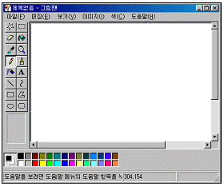
- [Alt] 키
- [Shift] 키
- [Ctrl] 키
- [Home] 키
(정답률: 78%)
33. 한글 Windows 98의 메모장에서 [파일]-[페이지 설정] 메뉴를 클릭하였다. 페이지 설정 대화 상자에 관한 다음 설명 중 옳지 않은 것은?
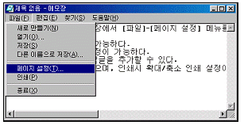
- 용지 크기의 설정이 가능하다.
- 인쇄 방향과 여백 설정이 가능하다.
- 인쇄시 머리글과 바닥글을 추가할 수 있다.
- 팩스 인쇄 기능이 있으며, 인쇄시 확대/축소 인쇄 설정이 가능하다.
(정답률: 53%)
34. 한글 Windows 98을 설치하고 처음 부팅하게 되면 다음 그림과 같은 마법사 기능과 도움말을 사용할 수 있다. 처음 설치 이후에 이 기능을 임의로 사용하려면 다음 중 어느 프로그램을 실행하여야 하는가?
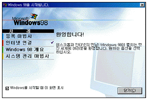
- c:\windows\welcome.exe
- c:\windows\wininit.exe
- c:\windows\logos.sys
- c:\windows\winpopup.exe
(정답률: 62%)
35. 한글 Windows 98의 네트워크 상에서 폴더를 공유할 때 각 폴더의 등록정보 창에서 설정할 수 있는 내용이 아닌 것은?
- 공유 이름 설정
- 사용 권한 설정
- 공유 이름 찾기 설정
- 암호 설정
(정답률: 49%)
36. 한글 Windows 98에서 설치되어 있는 하드웨어 정보를 볼 수 있는 곳은?
- [탐색기] - [도움말] - [Windows 정보]
- [네트워크 환경] - [등록 정보] - [컴퓨터 확인]
- [프로그램] - [보조프로그램] - [시스템도구]
- [제어판] - [시스템] - [장치관리자]
(정답률: 57%)
37. 한글 Windows 98의 동일한 창에서 폴더 열기가 선택되었다. 다음 그림과 같이 표시된 창에 대한 설명으로 옳지 않는 것은?
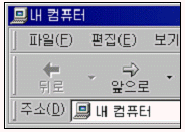
- 내 컴퓨터에 대한 창을 열어 놓은 것이다.
- “앞으로”의 오른쪽 옆에 보이는 ▼를 클릭하면 맨 처음 창을 열었던 창으로 돌아온다.
- “앞으로”를 클릭하면 “뒤로”를 선택하기 바로 전의 창으로 이동한다.
- 하위 폴더를 열었다가 “뒤로” 버튼을 이용하여 그 전으로 돌아온 상태이다.
(정답률: 69%)
38. 한글 Windows 98의 [탐색기]에서 가장 아래에는 상태 표시줄이 위치하는데 다음 중 상태 표시줄에 표시되는 항목이 아닌 것은?
- 디스크 여유 공간
- 폴더내의 총 개체 수
- 파일의 크기
- 폴더의 전체 경로
(정답률: 49%)
39. 다음은 한글 Windows 98에서 [디스크 검사]의 정밀 검사 옵션에 관한 설명이다. 옳지 않은 것은?
- 시스템 및 데이터 영역 검사 : 시스템과 파일이 있는 영역의 논리적 손상을 검사한다.
- 시스템 영역만 검사 : 시스템 파일이 들어 있는 영역만 검사한다.
- 데이터 영역만 검사 : 데이터 파일이 들어 있는 영역만 검사한다.
- 쓰기 검사를 수행하지 않음 : 디스크가 입력할 수 있는 상태인지를 확인하기 위하여 디스크의 내용을 읽고 다시 기록하는 것을 선택하는 옵션이다.
(정답률: 34%)
40. 한글 Windows 98에서 프로그램간에 전송되는 자료들을 일시적으로 보관해 두는 곳으로 워드패드의 내용을 복사하거나 그림판에서 그림을 복사할 때 자료를 일시적으로 보관해 주는 일종의 임시보관소를 무엇이라고 하는가?
- 클립보드(Clipboard)
- 클립아트(Clipart)
- 문서편집기
- 폴더
(정답률: 73%)
3과목: PC 기본 상식
41. 다음 중 전원이 공급되지 않아도 내용이 지워지지 않아서 디지털 카메라의 보조저장장치로 사용되는 기억 장치는?
- DRAM
- SRAM
- 플래시 메모리(Flash Memory)
- ROM
(정답률: 69%)
42. 다음은 컴퓨터의 발달과정에 대하여 설명한 것이다. 옳지 않은 것은?
- 세계 최초의 전자식 계산기는 에니악(ENIAC)이다.
- 프로그램 내장방식을 최초로 제안한 사람은 파스칼이다.
- 제1세대 컴퓨터는 진공관을 사용하였다.
- 제2세대 컴퓨터는 트랜지스터를 사용하였다.
(정답률: 70%)
43. 다음 중 중앙처리장치를 구성하는 요소가 아닌 것은?
- 보조기억장치
- 연산장치
- 제어장치
- 레지스터
(정답률: 57%)
44. 다음 중 빛의 반사 작용을 이용해서 사진이나 그림 등을 디지털 데이터로 변환하는데 사용되는 입력장치는?
- 태블릿
- 디지타이저
- 스캐너
- 플로터
(정답률: 70%)
45. 다음 중 성격이 다른 시스템 소프트웨어는 어느 것인가?
- 링커(Linker)
- 어셈블러(Assembler)
- 컴파일러(Compiler)
- 인터프리터(Interpreter)
(정답률: 64%)
46. 프로그램을 작성하는 과정에서 오류가 발생하였을 경우 이러한 오류를 제거하는 작업을 무엇이라고 하는가?
- 코딩
- 디버깅
- 테스팅
- 링킹
(정답률: 80%)
47. PC에서 사용되는 입력 및 출력 방식 중에서 본체와 병렬 방식으로 데이터를 주거나 받는 주변장치는 어느 것인가?
- 마우스
- 마이크
- 프린터
- 스피커
(정답률: 66%)
48. 다음 중 바이러스 예방법으로 가장 거리가 먼 것은?
- 새로운 디스크는 우선 바이러스 검사를 한다.
- 바이러스 예방 기능을 가진 백신 프로그램을 설치한다.
- 주기적으로 백신 프로그램을 업데이트하여 신종바이러스 전염을 예방한다.
- 네트워크 메일을 통한 바이러스를 예방하기 위하여 수신된 메일을 열어보지 않는다.
(정답률: 73%)
49. 다음은 무엇에 대하여 설명한 것인가?
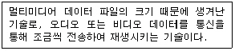
- 압축기술
- 양자화기술
- 스트리밍 기술
- 변조기술
(정답률: 77%)
50. 정보통신 시스템의 기본 구성요소에 해당되지 않는 것은?
- 가입자 단말장치
- 데이터 처리계
- 데이터 전송계
- 다중 시스템
(정답률: 49%)
51. 자주 사용하는 사이트의 자료를 하드디스크에 저장하고 있다가, 사용자가 다시 그 자료에 접근하면 네트워크를 통해서 다시 읽어 오지 않고 미리 저장한 하드디스크의 자료를 활용해서 다시 빠르게 보여주는 기능을 무엇이라 하는가?
- 쿠키(Cookie)
- 캐싱(Caching)
- 필터링(Filtering)
- 푸싱(Pushing)
(정답률: 56%)
52. 다음 중 전자상거래에 대한 설명으로 옳지 않은 것은?
- 컴퓨터 네트워크를 통해 상품정보를 전달하고 결제할 수 있다.
- 24시간 전자상점을 이용할 수 있고, 상점은 상품을 전시할 물리적인 공간이나 별도의 유통 채널이 필요 없다.
- 네트워크에 접속된 상태에서 인터넷의 여러 웹 페이지의 내용을 검색해 보는 프로그램이다.
- 개인/기업/국가간의 네트워크를 통한 비즈니스 행위이다.
(정답률: 62%)
53. 다음 중 컴퓨터를 분류하는 방법으로 옳지 않은 것은?
- 컴퓨터의 모양에 따른 분류
- 처리하는 데이터의 형태에 의한 분류
- 사용 목적에 따른 분류
- 컴퓨터 규모에 따른 분류
(정답률: 72%)
54. 다음 중 통신 프로토콜의 기능과 거리가 먼 것은?
- 바이러스 감지 기능 수행
- 흐름제어(Flow Control) 기능 수행
- 동기화(Synchronization) 기능 수행
- 에러 검출 기능 수행
(정답률: 52%)
55. 다음 중 멀티미디어 출력장치와 거리가 먼 것은?
- 모니터
- 컬러프린터
- 빔 프로젝터
- 그래픽 태블릿
(정답률: 49%)
56. 유즈넷(USENET) 게시판 사용 예절로 옳지 않은 것은?
- 기사는 주제와 맞는 그룹에 간략하게 작성하여 올린다.
- 자신의 질문에 대한 답변을 받았을 경우에는 감사의 표시를 한다.
- 기사를 올릴 때에는 기사를 읽는 사람의 입장을 생각해서 작성한다.
- 뉴스가 많을수록 좋으므로 이미 게시된 기사와 유사한 내용의 뉴스라도 올리는 것이 좋다.
(정답률: 77%)
57. 다음 중 컴퓨터 범죄를 예방하기 위한 방법으로 옳지 않은 것은?
- 내부 네트워크에 방화벽을 설치하고 중요한 정보는 암호화한다.
- 방화벽이 설치된 경우 바이러스를 예방하기 위한 백신 프로그램은 설치하지 않아도 된다.
- 다른 사람들이 쉽게 유추할 수 없는 패스워드를 사용하고 주기적으로 변경한다.
- 개인정보를 요청하는 사이트 중 개인신상정보에 대하여 과다한 요구를 하는 사이트는 가급적 가입을 자제한다.
(정답률: 82%)
58. 기능 및 사용기간 제한이 없는 공개용 프로그램으로 저작권자의 동의 없이 자유롭게 교환하거나 복사해서 사용할 수 있는 소프트웨어는?
- 프리웨어(Freeware)
- 베타버전(Beta Version)
- 쉐어웨어(Shareware)
- 데모버전(Demonstration Version)
(정답률: 71%)
59. 3차원 컴퓨터 그래픽에서 화면에 표시되는 3차원 물체의 각 면에 색깔이나 음영 효과를 넣어 화상의 입체감과 사실감을 나타내는 방법은?
- 렌더링(Rendering)
- 디더링(Dithering)
- 인터레이싱(Interacing)
- 메조틴트(Mezzotint)
(정답률: 45%)
60. 각종 영상 정보를 저장해 두었다가 가입자의 요구에 따라 통신을 통해 가정에서 원하는 영상 정보를 볼 수 있도록 해주는 서비스는?
- 하이퍼링크(Hyperlink)
- 가상 현실(VR)
- 화상회의 시스템(VCS)
- 주문형 비디오(VOD) 서비스
(정답률: 71%)